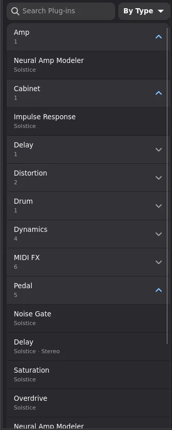

Plug-ins
Your plug-ins, and twenty of its own
VST3, CLAP and LV2 on Linux, Windows plug-ins set up for you through yabridge, and a full set of built-in effects and instruments.
VST3, CLAP and LV2
Solstice hosts the three plug-in formats used on Linux, effects and instruments alike, from the standard folders: ~/.vst3, ~/.clap, ~/.lv2 and the system ones. Add other folders in Preferences ▸ Plug-ins. First-run setup also looks for plug-ins installed somewhere unusual, under /opt or ~/.local/lib, and offers to add those folders.
- Scanning can't crash Solstice. Each VST3 and CLAP module is loaded in a separate scanner process first. One that crashes or hangs (it gets 15 seconds) is listed under "Failed to Load" in Preferences instead of taking Solstice down with it. Results are cached, so only new or updated plug-ins are scanned on the next start.
- If a Windows plug-in's bridge dies while you're working, whether it's a VST3 or a CLAP plug-in, Solstice notices and stops calling it. Its slot keeps its last settings and turns red, a message offers Reload, which opens it fresh, and export waits until it's back, so a mix can't go out with a plug-in silently missing.
- A plug-in that crashes as a project opens is left unloaded the next time, with a note saying so, so one bad plug-in can't lock you out of a session.
- Their own windows, or plain controls. A plug-in's own interface opens in a Solstice window with the presets, bypass and side-chain controls across the top. Switch to "Controls" for a slider for every parameter instead.
Windows plug-ins through yabridge
If the amp sim or the drum sampler you rely on only comes for Windows, yabridge runs it in Wine and presents it to Solstice as a Linux plug-in. Setting that up has usually meant a terminal and a guide. Solstice's first-run setup does it for you:
- it checks which Wine and yabridge you have, and offers to install Wine through your desktop's own software installer;
- it searches your Wine prefixes, including Bottles and Lutris ones, for Windows VST3 and CLAP folders;
- "Set Up" adds those folders to yabridge, bridges the plug-ins and rescans, so they appear in the Library straight away.
Setup also warns you if your yabridge build is one that ignores clicks in Windows plug-ins' menus under newer Wine, and points to the fix. Preferences ▸ Plug-ins keeps the folder list for later.
Finding the right plug-in
Press Y for the Library. It lists every plug-in grouped by type, by developer or by name, with a search box, and only shows what fits the selected strip, so you're never offered an instrument for an audio track. Pick one and it goes on the selected track; drag it to a particular slot instead if you'd rather.
Plug-in suites that ship a separate version for every channel layout or band count, like an EQ in 8, 16 and 32-band mono and stereo versions, appear as one entry. The right version is chosen for the slot, and the plug-in window lets you switch versions with your settings carried across.
Right-click any plug-in to change its categories. Giving an amp sim the Amp category is what lets it into a guitar strip's Amp section. Plug-ins you never use can be switched off in Preferences to keep the lists short.

Presets
Every plug-in window has a preset menu with arrows to step through it. Solstice's own plug-ins have factory presets named for the job; any plug-in, from any format, can have its settings saved as your own preset and recalled in any project.
Twenty built-in plug-ins
A band can be recorded, mixed and mastered with nothing but what comes with Solstice. Every built-in has its own window, drawn to match the rest of the app.
| Plug-in | What it's for | Some of its presets |
|---|---|---|
| Channel EQ | Eight bands on every strip, with an analyser | Kick, Snare, Overheads, Bass, Electric Guitar, Vocal Clarity |
| Compressor | Levelling and punch; can be keyed from another track | Kick Punch, Snare Snap, Drum Bus Glue, Bass Even, Vocal Upfront |
| Limiter | Look-ahead peak limiting | Safety, Drum Bus Peaks, Transparent Master, Loud Master |
| Noise Gate | Closing up drums and amp hiss; can be keyed | Kick, Snare, Toms, Guitar Amp Hum, Vocal Breaths |
| De-esser | Taming sibilance and harsh cymbals | Female Vocal, Male Vocal, Gentle, Cymbals |
| Saturation | Tape, tube or hard clipping | Warm Bus, Tape Glue, Guitar Crunch, Bass Grit |
| Overdrive | A mid-hump drive that keeps the lows tight | Tight Boost, Mid Push, Crunch, Lead |
| Stereo Delay | Tempo-synced or free, with ping-pong | Slapback, Tape Echo, Dotted Eighth, Dub Echo |
| Space Reverb | Rooms, plates and halls | Drum Room, Vocal Plate, Medium Hall, Dark Chamber |
| Neural Amp Modeler | Captures of real amps and pedals | Single Coils, Humbuckers, Active Pickups, Bass |
| Impulse Response | Speaker cabinets and rooms | Cabinet, Cabinet Blend, Room |
| Drum Kit | A synthesised kit, or your own samples on 16 pads | Dynamic, Punchy, Soft |
| Sampler | Multi-sampled instruments; imports SFZ | Natural, Staccato, Slow Swell |
| Solstice Synth | Two-oscillator synth for keys, pads and bass | Electric Keys, Warm Pad, String Ensemble, Sub Bass |
Six MIDI effects go in front of instruments: Arpeggiator, Chord Trigger, Note Repeater, Scale Quantize, Transposer and Velocity Processor. For a guitarist programming keys, Chord Trigger turns one finger into a full chord, and Scale Quantize keeps every note in key.